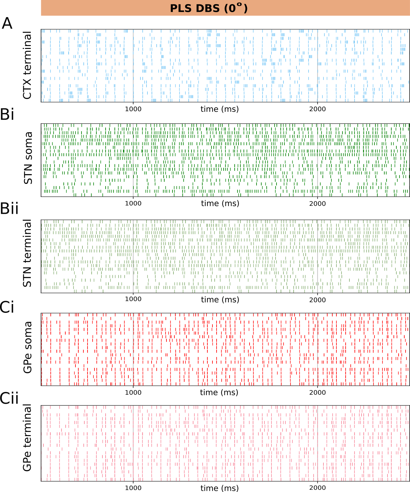

Figure A1:Somatic and axonal activation by PLS DBS with
180
phase shift DBS pulses were administered with a
180
phase shift with respect to the onset of periodic cortical bursts (20 Hz). A-C:
Representative spike trains recorded at somatic and axon terminal compartments the
CTX (A, blue), STN (B, green) and GPe (C, red) populations. PLS DBS was applied
during the entire period shown.

Figure A2:Somatic and axonal activation by PLS DBS with
180
phase shift DBS pulses were aligned (0
phase shift) with the onset of periodic cortical bursts (20 Hz). A-C: Representative
spike trains recorded at somatic and axon terminal compartments the CTX (A, blue),
STN (B, green) and GPe (C, red) populations. PLS DBS was applied during the entire
period shown.